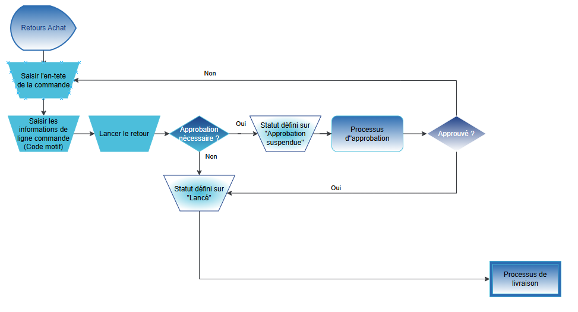

Fiche d'Aide à la Décision
FAD
 -
-
DOCUMENT D’ANALYSE FONCTIONNEL
-
FUNCTIONAL ANALYSIS DOCUMENT
Processus Achat
Microsoft Business Central

- ANAL

Sommaire
4. Traitement d‘une livraison directe 6
5. Saisie d’une demande de prix 7
6. Saisie d’une commande cadre 8
7. Saisie d’une commande d‘achat 10
8. Saisie d’un retour d’une commande achat 12
11. Annexe 1 : Liste d‘écarts 16
Ce document liste l’analyse fonctionnel sur les processus métier du client concernant le domaine des achats. Les principaux objectifs de l’analyse fonctionnel sont :
- Visiter les sites clients comme les usines, entrepôts et/ou bureaux
- Conduire des ateliers orientés processus.
- Ne pas rentrer en profondeur sur les fonctionnalités de l’ERP ni faire de démonstrations
- Comprendre la façon de travailler actuelle, les points faibles et les attentes globales et futures
- Identifier les écarts critiques et les interfaces qui peuvent avoir un impact sur le projet
- Identifier les volumes des référentiels et données transactionnelles
- Confirmer le périmètre fonctionnel, technique, géographique et organisationnel du projet
- Identifier un jeu de donnée nécessaire pour l’ERP pour mieux préparer les ateliers de démonstration.
Ce document a été préparé sur la base d‘atelier(s) réalisés avec les membres de l'équipe de projet suivants :
Atelier | Date | Lieu | Almakom | Client |
1er atelier | … | … | Nom et Prénom | Nom et Prénom |
2ème atelier | … | … | Nom et Prénom | Nom et Prénom |
Versions du document
Version | Date | Description | Ecrit par | Approuvé par |
Draft | JJ/MM/AAAA | Draft | Nom et Prénom | Nom et prénom |
… | JJ/MM/AAAA | … | … | … |
Membre de l‘équipe | Fonction | |
Nom et Prénom | … | … |
Nom et Prénom | … | … |
Les processus standards ERP qui font partie des ateliers d’analyse sur les achats sont :

3 Planification
3.1. Contexte et Hypothèses
[INFORMATION MANQUANTE]
Les hypothèses qui peuvent avoir un impact sur le projet doivent être indiquées.
3.2. Schéma des processus ERP : Planification 1.0

3.3. Principales règles de gestion
[INFORMATION MANQUANTE]
3.4. Documents et statistiques
[INFORMATION MANQUANTE]
3.5. Volume des données
[INFORMATION MANQUANTE]
3.6. Écarts critiques et interfaces
[INFORMATION MANQUANTE]
Ces écarts et interfaces doivent être initialisés dans la liste des écarts délivrée qui doit être finie à la fin de la phase d’Analyse.
4 Traitement d‘une livraison directe
4.1. Contexte et Hypothèses
**Contexte et hypothèses du processus de traitement d'une livraison directe**
**Situation actuelle :**
Le processus de traitement d'une livraison directe est actuellement manuel et nécessite une réception physique des colis, suivie d'un processus de "incoming" pour contrôler et réceptionner la livraison. Les instructions d'incoming sont données par le chef de projet, et les certificats sont gérés par la Qualité Contrôle. Les petites commandes nécessitent une chaîne d'approbation, et les achats sont gérés en fonction du budget.
**Points critiques :**
* La difficulté de savoir où se trouve le colis physique
* Le processus de réception à revoir
* La gestion des certificats par la Qualité Contrôle
* La nécessité d'avoir les certificats pour toutes les pièces, ce qui dépend du projet
* La chaîne d'approbation pour les petites commandes
* La gestion du multi-sourcing et des références fournisseur
* La catégorisation des fournisseurs
**Attentes client :**
* Un processus de traitement d'une livraison directe automatisé et efficace
* Une réception facile et rapide des colis
* Une gestion des certificats simplifiée
* Une chaîne d'approbation claire et transparente
* Une gestion du multi-sourcing et des références fournisseur efficace
* Une catégorisation des fournisseurs possible
**Hypothèses :**
* La nécessité d'avoir les certificats pour toutes les pièces, ce qui dépend du projet
* La possibilité de trouver une source pour la catégorisation des fournisseurs (via Catya?)
* La nécessité de paramétrer les fournisseurs préférés
* La possibilité de rentrer les offres fournisseurs et de les lier aux projets
* La nécessité de séquencer les archivages des devis et des commandes
* La possibilité de créer un contrôle qualité pour les réceptions de colis
**Conclusion :**
Le processus de traitement d'une livraison directe actuel nécessite une révision pour améliorer l'efficacité et la transparence. Les hypothèses énoncées ci-dessus doivent être prises en compte pour développer un processus automatisé et efficace.
Les hypothèses qui peuvent avoir un impact sur le projet doivent être indiquées.
4.2. Schéma des processus ERP : Traitement d’une livraison directe 2.0

4.3. Principales règles de gestion
[INFORMATION MANQUANTE]
4.4. Documents et statistiques
[INFORMATION MANQUANTE]
4.5. Volume des données
[INFORMATION MANQUANTE]
4.6. Écarts critiques et interfaces
[INFORMATION MANQUANTE]
Ces écarts et interfaces doivent être initialisés dans la liste des écarts délivrée qui doit être finie à la fin de la phase d’Analyse.
5.1. Contexte et Hypothèses
**Processus de saisie des demandes de prix**
**Contexte et hypothèses**
Le processus de saisie des demandes de prix est un élément clé de la gestion des achats au sein de l'entreprise Almatech. Actuellement, le processus est décrit comme suit :
1. **Recherche de fournisseurs** : Les utilisateurs recherchent des fournisseurs pour répondre à leurs besoins en matière de pièces ou de services.
2. **Création d'une demande de prix** : Les utilisateurs créent une demande de prix en saisissant les informations nécessaires, telles que le type d'article, la quantité, la date de livraison, etc.
3. **Envoi de la demande de prix** : La demande de prix est envoyée aux fournisseurs sélectionnés.
4. **Réception des offres** : Les fournisseurs répondent à la demande de prix en envoyant leurs offres.
5. **Analyse et sélection de l'offre** : Les utilisateurs analysent les offres reçues et sélectionnent la meilleure offre.
6. **Création d'une commande** : La commande est créée en fonction de la sélection de l'offre.
7. **Réception et inspection des pièces** : Les pièces sont reçues et inspectées pour s'assurer qu'elles correspondent à la commande.
8. **Validation de la commande** : La commande est validée par le chef de projet ou le responsable des achats.
**Difficultés rencontrées**
Les utilisateurs rencontrent plusieurs difficultés dans le processus de saisie des demandes de prix, notamment :
* La recherche de fournisseurs appropriés
* La saisie des informations nécessaires pour la demande de prix
* La gestion des offres reçues
* La sélection de la meilleure offre
* La création de la commande
* La réception et l'inspection des pièces
**Attentes du client**
Le client attend que le processus de saisie des demandes de prix soit simplifié et automatisé pour réduire les erreurs et les délais. Il attend également que le système de gestion des achats soit intégré avec les autres systèmes de l'entreprise pour améliorer la visibilité et la traçabilité des opérations.
**Hypothèses**
Les hypothèses suivantes peuvent avoir un impact sur le projet :
* La disponibilité des ressources humaines et financières pour la mise en œuvre du projet
* La capacité de l'entreprise à adopter de nouvelles technologies et de nouvelles méthodes de travail
* La volonté de l'entreprise à investir dans la formation et la sensibilisation des utilisateurs aux nouvelles fonctionnalités du système de gestion des achats.
En résumé, le processus de saisie des demandes de prix est un élément clé de la gestion des achats au sein de l'entreprise Almatech. Les utilisateurs rencontrent plusieurs difficultés dans ce processus, et le client attend que le processus soit simplifié et automatisé pour réduire les erreurs et les délais. Les hypothèses suivantes peuvent avoir un impact sur le projet.
Les hypothèses qui peuvent avoir un impact sur le projet doivent être indiquées.
- Schéma des processus ERP : Demande de prix 3.0

5.3. Principales règles de gestion
[INFORMATION MANQUANTE]
5.4. Documents et statistiques
[INFORMATION MANQUANTE]
5.5. Volume des données
[INFORMATION MANQUANTE]
5.6. Écarts critiques et interfaces
[INFORMATION MANQUANTE]
Ces écarts et interfaces doivent être initialisés dans la liste des écarts délivrée qui doit être finie à la fin de la phase d’Analyse.
6.1. Contexte et Hypothèses
**Situation actuelle**
Le processus de saisie d'une commande cadre à l'Atelier Achats d'Almatech est complexe et nécessite une gestion minutieuse des différentes étapes. Les trois types d'achats (offres, projets et achats génériques société) nécessitent des approches distinctes. Les achats mutualisés multi-projet sont également pris en compte, avec deux options : "industrielle", "spécifique" et "spécifique optimisée".
**Points critiques**
Les points critiques du processus sont les suivants :
* La réception des pièces est un processus à revoir, notamment pour savoir où se trouve le colis et effectuer le contrôle et la réception de la livraison.
* La gestion des certificats par la Qualité Contrôle est importante, mais il n'est pas nécessaire d'avoir les certificats pour toutes les pièces.
* Les petites commandes nécessitent une chaîne d'approbation, avec un seuil dépendant de la personne qui passe la commande ou du risque sur la commande.
* La gestion du multi-sourcing, y compris la référence fournisseur, est cruciale.
* Les informations de planning, telles que le lead-time, le stock de sécurité et le Minimum Order Quantity, sont essentielles.
* La catégorisation des fournisseurs est possible, mais il faudra voir si on peut trouver une source possible de cette catégorisation.
**Attentes client**
Les attentes client sont les suivantes :
* Un tableau de bord adapté au profil pour l'utilisateur avec les informations pertinentes.
* Un export facile dans Excel.
* Une gestion du multi-sourcing, y compris la référence fournisseur.
* Des informations de planning, telles que le lead-time, le stock de sécurité et le Minimum Order Quantity.
* Une catégorisation possible des fournisseurs.
**Hypothèses**
Les hypothèses qui peuvent avoir un impact sur le projet sont les suivantes :
* La nécessité de réviser le processus de réception des pièces.
* La possibilité de trouver une source possible de catégorisation des fournisseurs.
* La nécessité de paramétrer les fournisseurs préférés.
* La possibilité de créer un document d'entrée en stock pour faciliter la gestion des pièces reçues.
Les hypothèses qui peuvent avoir un impact sur le projet doivent être indiquées.
6,2, Schéma des processus ERP : Saisie d’une commande cadre 4.0

6.3. Schéma des processus ERP : Saisie d’une commande d’achat

6.4. Principales règles de gestion
[INFORMATION MANQUANTE]
6.5. Documents et statistiques
[INFORMATION MANQUANTE]
6.6. Volume des données
[INFORMATION MANQUANTE]
6.7. Écarts critiques et interfaces
[INFORMATION MANQUANTE]
Ces écarts et interfaces doivent être initialisés dans la liste des écarts délivrée qui doit être finie à la fin de la phase d’Analyse (après la phase d'Analyse fonctionnel).
7 Saisie d’une commande d‘achat
7.1. Contexte et Hypothèses
**Contexte du processus de saisie des commandes d'achat**
Le processus de saisie des commandes d'achat est un processus clé dans l'atelier Achats d'Almatech. Il s'agit de gérer les commandes d'achat pour les différents types d'achats, notamment les offres (devis), les projets (demande d'achat) et les achats génériques société (licences, ordinateurs...).
**Points critiques**
Les points critiques du processus de saisie des commandes d'achat sont les suivants :
* La réception des pièces est un processus à revoir, notamment pour savoir où se trouve le colis et pour effectuer le contrôle et la réception de la livraison.
* La gestion des certificats par la Qualité Contrôle est importante, mais il n'est pas nécessaire de les avoir pour toutes les pièces, cela dépend du projet.
* Les petites commandes nécessitent une chaîne d'approbation, notamment un seuil dépendant de la personne qui passe la commande ou du risque sur la commande.
* La gestion du multi-sourcing, y compris la référence fournisseur, est importante pour optimiser les achats.
* La catégorisation des fournisseurs est possible, mais il faudra voir si on peut trouver une source possible de cette catégorisation.
**Attentes du client**
Les attentes du client sont les suivantes :
* Un tableau de bord adapté au profil pour l'utilisateur avec les informations pertinentes.
* Un export facile dans Excel.
* Une gestion du multi-sourcing, y compris la référence fournisseur.
* Des informations de planning, notamment le lead-time, le stock de sécurité, le Minimum Order Quantity, y compris les vacances des fournisseurs et des transporteurs.
* Une catégorisation possible des fournisseurs.
**Hypothèses**
Les hypothèses qui peuvent influencer le projet ou l'analyse sont les suivantes :
* La nécessité de réviser le processus de réception des pièces.
* La possibilité de trouver une source possible de catégorisation des fournisseurs.
* La nécessité de gérer les certificats par la Qualité Contrôle.
* La possibilité de bloquer les livraisons en cas de problème de qualité.
**Conclusion**
Le processus de saisie des commandes d'achat est un processus clé dans l'atelier Achats d'Almatech. Les points critiques sont la réception des pièces, la gestion des certificats, les petites commandes et la gestion du multi-sourcing. Les attentes du client sont un tableau de bord adapté, un export facile dans Excel et une gestion du multi-sourcing. Les hypothèses qui peuvent influencer le projet ou l'analyse sont la nécessité de réviser le processus de réception des pièces, la possibilité de trouver une source possible de catégorisation des fournisseurs et la nécessité de gérer les certificats par la Qualité Contrôle.
Les hypothèses qui peuvent avoir un impact sur le projet doivent être indiquées.
7.2 Schéma des processus ERP : Saisie d’une commande d’achat

7.3. Principales règles de gestion
[INFORMATION MANQUANTE]
7.4. Documents et statistiques
[INFORMATION MANQUANTE]
7.5. Volume des données
[INFORMATION MANQUANTE]
7.6. Écarts critiques et interfaces
[INFORMATION MANQUANTE]
Ces écarts et interfaces doivent être initialisés dans la liste des écarts délivrée qui doit être finie à la fin de la phase d’Analyse (après la phase d'Analyse fonctionnel).
8 Saisie d’un retour d’une commande achat
8.1. Contexte et Hypothèses
**Processus de gestion des retours fournisseurs**
**Contexte et hypothèses**
Le processus de gestion des retours fournisseurs est actuellement en place dans l'atelier Achats d'Almatech. Cependant, il est nécessaire de décrire le fonctionnement actuel, identifier les difficultés rencontrées et préciser les attentes et hypothèses qui peuvent impacter le projet.
**Fonctionnement actuel**
Le processus de gestion des retours fournisseurs est le suivant :
1. Réception des pièces : Le processus de réception est à revoir, car il est difficile de savoir où se trouve le colis. Le processus d'"incoming" consiste en un contrôle et une réception de la livraison, avec photos du colis non ouvert et puis colis ouvert avec les pièces.
2. Contrôle et réception : Les instructions d'"incoming" sont données par le chef de projet. En cas de Non Conformité (NC), un traitement de la NC est effectué avec le fournisseur, avec éventuel retour au fournisseur et blocage de la facture concernée.
3. Gestion des certificats : Les certificats sont gérés par la Qualité Contrôle. Il n'y a pas nécessairement besoin d'avoir les certificats pour toutes les pièces, cela dépend du projet (si pièce de vol ou non).
4. Petites commandes : Les petites commandes nécessitent une chaîne d'approbation, avec seuil (dépendant de la personne qui passe la commande ou du risque sur la commande), approbation par un groupe d'approbateurs possible (p.ex CEO+CFO) et critère : achat dans budget ou pas.
**Difficultés rencontrées**
Les difficultés rencontrées sont les suivantes :
* Difficulté de savoir où se trouve le colis lors de la réception.
* Processus d'"incoming" complexe et nécessitant des instructions du chef de projet.
* Gestion des certificats complexe et nécessitant une Qualité Contrôle.
* Chaîne d'approbation pour les petites commandes complexe et nécessitant plusieurs étapes.
**Attentes et hypothèses**
Les attentes et hypothèses qui peuvent impacter le projet sont les suivantes :
* Amélioration du processus de réception pour faciliter la localisation du colis.
* Simplification du processus d'"incoming" pour réduire la complexité.
* Gestion des certificats simplifiée pour réduire la complexité.
* Amélioration de la chaîne d'approbation pour les petites commandes pour réduire la complexité.
En résumé, le processus de gestion des retours fournisseurs actuel est complexe et nécessite des améliorations pour faciliter la localisation du colis, simplifier le processus d'"incoming", simplifier la gestion des certificats et améliorer la chaîne d'approbation pour les petites commandes.
Les hypothèses qui peuvent avoir un impact sur le projet doivent être indiquées.
8.2. Schéma des processus ERP : Saisie d’un retour d’une commande achat 6.0

8.3. Principales règles de gestion
[INFORMATION MANQUANTE]
8.4. Documents et statistiques
[INFORMATION MANQUANTE]
8.5. Volume des données
[INFORMATION MANQUANTE]
8.6. Écarts critiques et interfaces
[INFORMATION MANQUANTE]
Ces écarts et interfaces doivent être initialisés dans la liste des écarts délivrée qui doit être finie à la fin de la phase d’Analyse.
9.1. Contexte et Hypothèses
[INFORMATION MANQUANTE]
Les hypothèses qui peuvent avoir un impact sur le projet doivent être indiquées.
9.2 Schéma des processus ERP : Rapport achat 8.0

9.3. Principales règles de gestion
[INFORMATION MANQUANTE]
9.4. Documents et statistiques
[INFORMATION MANQUANTE]
9.5. Volume des données
[INFORMATION MANQUANTE]
9.6. Ecarts critiques et interfaces
[INFORMATION MANQUANTE]
Ces écarts et interfaces doivent être initialisés dans la liste des écarts délivrée qui doit être finie à la fin de la phase d’Analyse.
10.1. Contexte et Hypothèses
[INFORMATION MANQUANTE]
Les hypothèses qui peuvent avoir un impact sur le projet doivent être indiquées.
10.2 Schéma des processus ERP : Historique achat 9.0

10.3. Principales règles de gestion
[INFORMATION MANQUANTE]
10.4. Documents et statistiques
[INFORMATION MANQUANTE]
10.5. Volume des données
[INFORMATION MANQUANTE]
10.6. Écarts critiques et interfaces
[INFORMATION MANQUANTE]
Ces écarts et interfaces doivent être initialisés dans la liste des écarts délivrée qui doit être finie à la fin de la phase d’Analyse.
11.1. Liste d’écarts
En fonction des informations fournies, la liste d'écarts sera stockée dans SharePoint.
Cette décision est basée sur le fait que les documents sources mentionnent la gestion de spécifications dans SharePoint, ce qui suggère que SharePoint est déjà utilisé pour stocker des documents importants. De plus, la gestion des certificats par la Qualité Contrôle est également mentionnée, ce qui pourrait impliquer que SharePoint est utilisé pour stocker ces documents.
Il est important de noter que cette décision nécessite une validation supplémentaire pour s'assurer que SharePoint est bien adapté pour stocker la liste d'écarts et que les processus de sécurité et de contrôle d'accès sont mis en place pour protéger ces informations sensibles.
Indiquer l’URL où la liste des écarts sera stockée (SharePoint / Teams / DevOps / Autre).